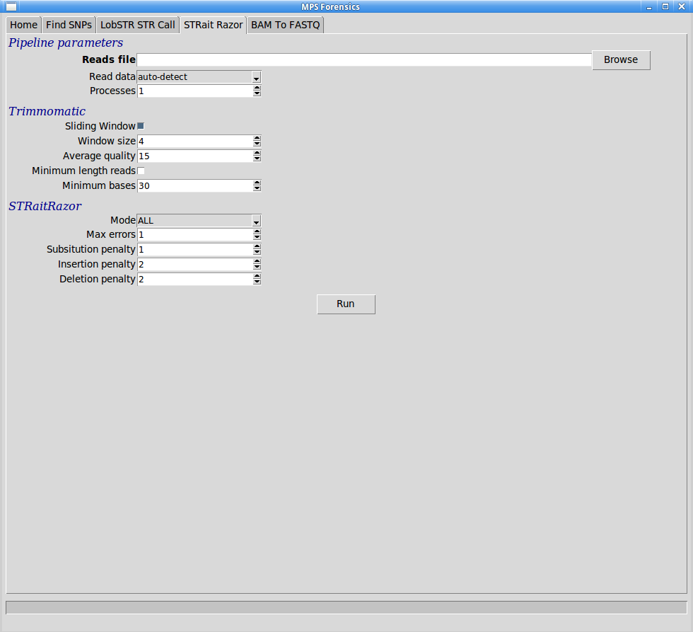

Return to help page
Return to help page
The STRait Razor v2.5 (from here-on referred to in short as Razor) pipeline identifies STRs from DNA sequences by running an approximate text matching algorithm (tre-agrep) on each sequence. It is capable of working with paired-end read data, though the reads must be long enough to sequence through the entire repeat region.
STRait Razor is capable of identifying STRs from almost every legimate STR-amplicon read, but it has no allelotype (genotype) caller available with it, which makes the output from Razor hard to transition into our allele viewer and no genotype is called, so we cannot further summarise the outputs.
STRait Razor is poorly written and offers no control of the number of threads it uses - always maxing out the host CPU. We have also had to modify its code to:
Return to help page